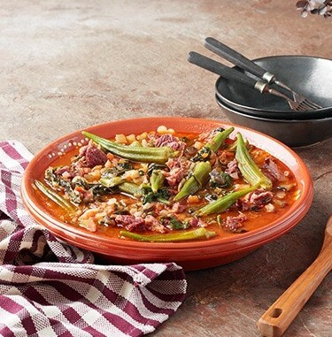

Calulu de carne seca

Decription
Categoria: Carne
Tempo de preparação: Demorado
Dificuldade: Fácil
Custo: Económico
Para desfrutar: Com a família
Ingredients
- 1kg de carne seca
- 500g de rama de batata-doce (se não tiver use espinafres)
- 2 dentes de alho picados
- 1 cebola picada
- 3 colheres de sopa de polpa de tomate
- 3 tomates maduros picados
- 1 beringela em cubos
- 400g de quiabos
- 1,5 colher de sopa de amido de milho
- Q.b. de sal
- Q.b. de pimenta
- Q.b. de funge para acompanhar
Steps
- Coloque a carne num recipiente coberto com água, durante 3 horas, para retirar o sal.
- Escorra a água da carne e corte-a em pedaços. De seguida coloque um fio de azeite num tacho largo e
adicione a carne. Cubra-a com água a ferver e junte o alho. Tape e deixe cozinhar por 30 a 40 minutos
até a carne estar cozida.
- Adicione a cebola, a rama de batata doce, o tamte, a polpa de tomate, o azeite e tempere com sal e
pimenta. Tape e deixe cozer por mais 10 minutos.
- Por último junte a beringela e os quiabos. Tape novamente e cozinhe por 5 minutos.
- Dissolva o amido de milho num pouco de água e adicione ao cozinhado para engrossar o molho. Mexa com
cuidado para não desfazer os legumes e deixe cozinhar mais 2 minutos. Sirva de imediato acompanhado de
funge.